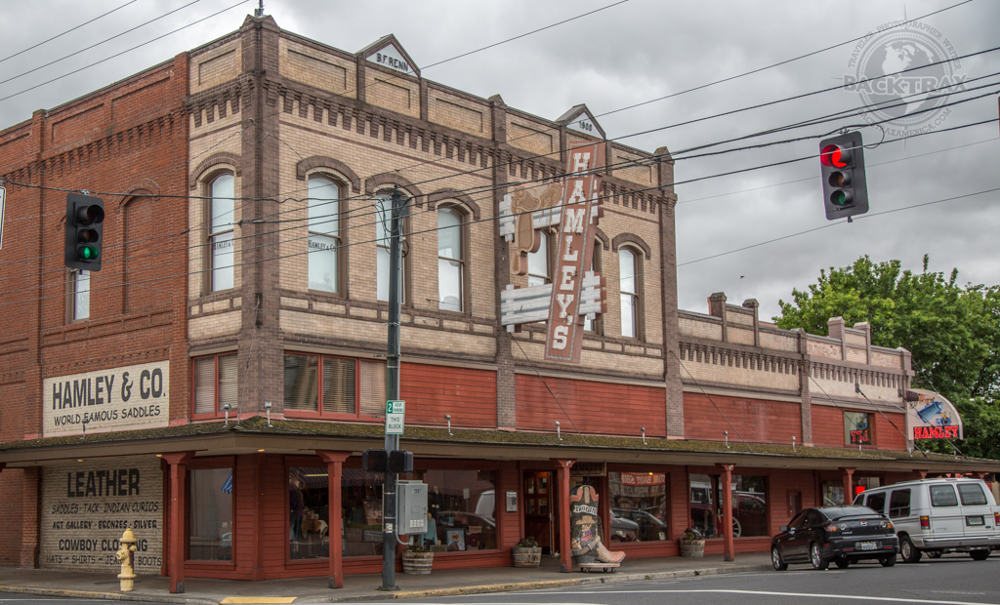

Pendleton, Oregon
The Real West
| City | Founded |
Region

|
Population | Urbanicity | Affluence |
|---|---|---|---|---|---|
| Pendleton | 1865 | Eastern Oregon | 17,289 | Rural | Average |
Did you know?

- Pendleton is the cultural center of Eastern Oregon, and is home to an Old Town listed on the National Register of Historic Places. This old western district gives the town the motto, "The Real West". 3
- Pendleton was originally named Marhsall, but was renamed after Senator George H, Pendleton. 3
- The annual Pendleton Round-Up is a famous rodeo that has taken place every year since 1910, winning the Professional Rodeo Cowboys Association (PRCA)'s Large Outdoor Rodeo of the Year seven times since 2003. 4